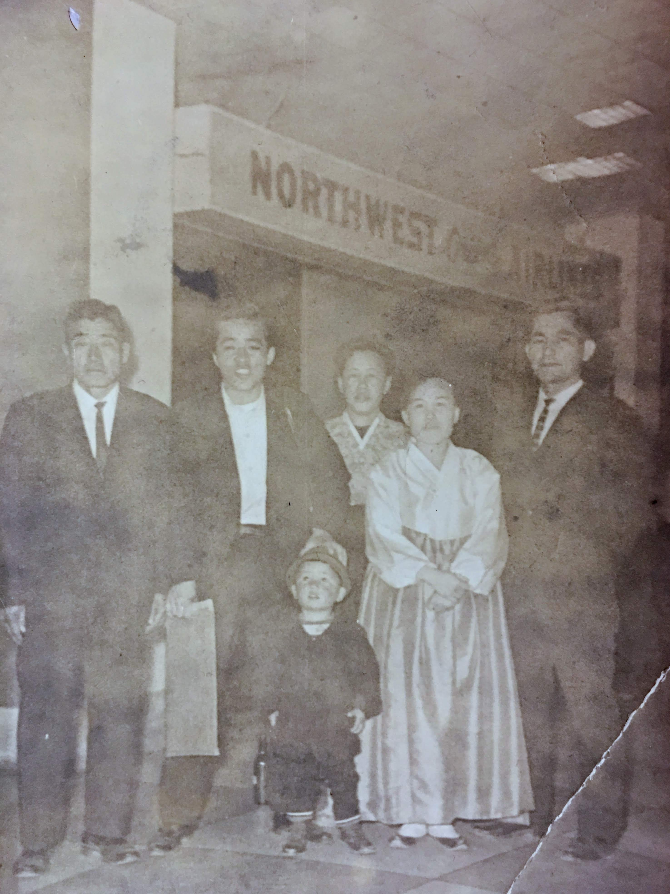

I don’t remember much about the college chemistry.
However, I must have passed the class, since I don’t recall retaking it.
But I do remember Doctor Heikkinen.
And my chemistry professor in college had his own style.
His hair was short and was he was fit.
He was ready to join a military boot camp
When students asked why that particular style
He replied, fashions come and go
Rather than chase trends, he will wait for the trend to catch up to him.
Sadly, fashion trends skipped Dr. H’s brand of fashion a number of times.
I don’t see it coming back anytime soon.
I understand that cycles of fashion is necessary for generating cash for the companies in the fashion world.
When I returned to my home country after 25 years away, I was surprised how well everyone dressed.
As well as how fast a trend permeated through the society.
[This was 8 years before the first iPhone was available.]
During that time, the trend was the 3-button suit for men.
Seemingly everyone, especially young-people, wore them.
The world was going to be without the 2-button suits, destined for extinction.
Remembering the words of Dr. H., I shopped at a closeout store and bought several suits for the price of a single suit.
All were the 2-button variety.
Now twenty some years later, I have worn out those suits and they have served me well.
Some of the younger colleagues were correcting my Korean, saying I was using terms that were no longer in vogue.
I felt like that guy that took a nap that turned into a period of absence of 20 years.
Having spent two decades overseas as a minority and learning a second language had toughened me.
I no longer had the need to fit into the mainstream of a society.
I relished in being different, taking cues from my parents, who were pioneers and had their own way of living.
Being refugees in one’s own country and fighting in battles shaped their thinking and kept their unique diets of the Northern Korea and style of clothing that met their needs.

Furthermore, pursuing an unique path can bring unexpected rewards.
I was assigned to work in Korea, because I knew the Korea culture, as well as the US Technology to be transferred, and had the ability to communicate with both sides and make each side understand.
According to the VP of Manufacturing, I was the only person that had all these characteristics.
They were planning on hiring the technical person and assigning a translator to make this work.
I no longer check to see if others are wearing a 2 or 3-button suits.
Like Dr. Heikkinen and my parents, I have found a manner of clothing style that I am comfortable in.
Moreover, I have witnessed other fads and trends that have faded.
I am somewhat surprised and happy that the Korean culture is viewed and followed by many.
I hope that Korea maintains its unique traditions, that are based on old Korean ways and a fusion of modern developments.
As I continue to understand the latest technological offerings, two principles have helped.
The guiding phrase from my parents has been1
소문난 잔치에 먹을거 없다 (Well publicized event has no food)
And the principle found in the New Testament, in Matthew 7:13,14
Enter ye in at the strait gate: for wide is the gate, and broad is the way, that leadeth to destruction, and many there be which go in thereat: Because strait is the gate, and narrow is the way, which leadeth unto life, and few there be that find it.
Appendix
“Rip Van Winkle,” a short story by Washington Irving, is set in the years before and after the American Revolutionary War. The story is part of his 1819 collection, “The Sketch Book of Geoffrey Crayon, Gent.” Here’s a synopsis of the story:
Synopsis of Rip Van Winkle by Chat GPT
Introduction
The tale is narrated by Geoffrey Crayon, who claims to have discovered it among the papers of a deceased historian, Diedrich Knickerbocker. This framing device lends an air of authenticity to the story.
Main Plot
Rip Van Winkle, the protagonist, is a kind, easygoing, and well-liked man living in a small Dutch village in the Catskill Mountains. He is married to a domineering wife, Dame Van Winkle, who frequently nags him for his laziness and reluctance to work on their farm. Rip prefers idling away his time, helping his neighbors with odd jobs, and escaping to the wilderness with his dog, Wolf.
One day, to avoid his wife’s incessant scolding, Rip wanders into the mountains. He encounters a strange man dressed in antiquated Dutch clothing, carrying a keg. Rip helps him carry the keg to a hollow in the mountain where he finds a group of similarly dressed men playing nine-pins, a game resembling bowling. The men are silent and solemn, and their play is accompanied by thunderous noises.
Rip drinks some of the liquor from the keg and falls into a deep sleep. When he wakes up, he finds that his dog is gone, his gun is rusted, and he feels unusually stiff. Returning to his village, he discovers everything has changed: his beard is a foot long, his clothes are ragged, and he recognizes no one.
The Transformation
Rip learns from the villagers that he has been asleep for 20 years. The American Revolutionary War has occurred in his absence, and the village is now part of a new nation. He finds that many of his old friends have died, and his children have grown up. His wife has also passed away.
Rip is initially bewildered and distressed by these changes, but he gradually adapts. He is taken in by his now-adult daughter and eventually resumes his old habits of idleness and storytelling. His extraordinary tale of sleeping through the revolution becomes a local legend, and he is accepted by the townspeople.
Themes
“Rip Van Winkle” explores themes of change and continuity, the passage of time, and the impacts of history on individuals. It contrasts the pre-Revolutionary and post-Revolutionary periods in American history, reflecting on how much can change while some human traits remain constant.
Conclusion
Rip Van Winkle’s long sleep allows him to escape his troubles and return to a world that has dramatically changed, but where he can find a place of comfort in the end. The story is a blend of fantasy and reality, emphasizing Washington Irving’s talent for weaving folklore with historical reflection.